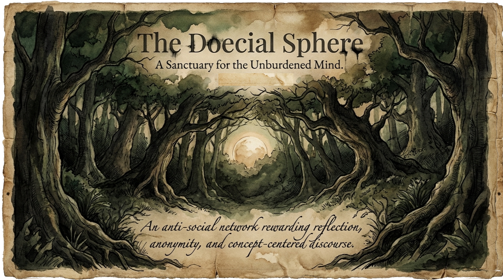
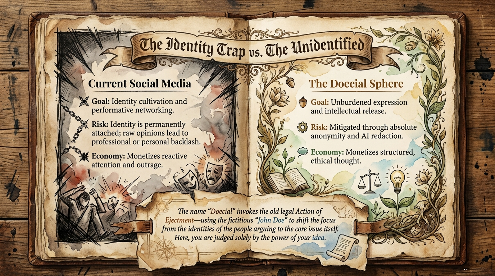
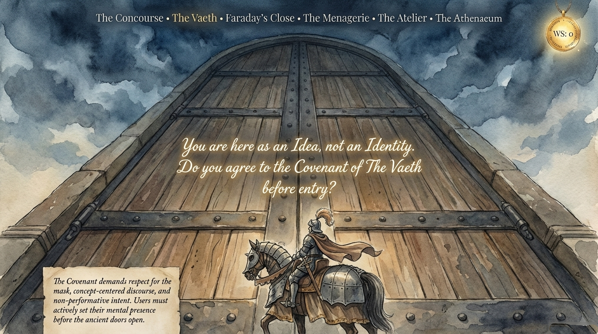
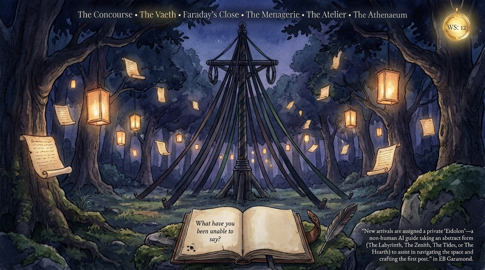
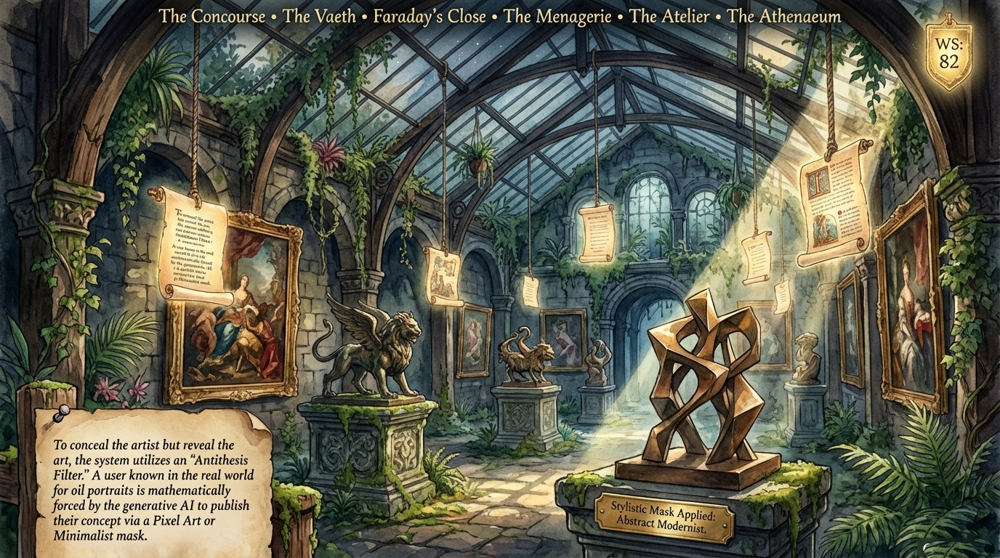
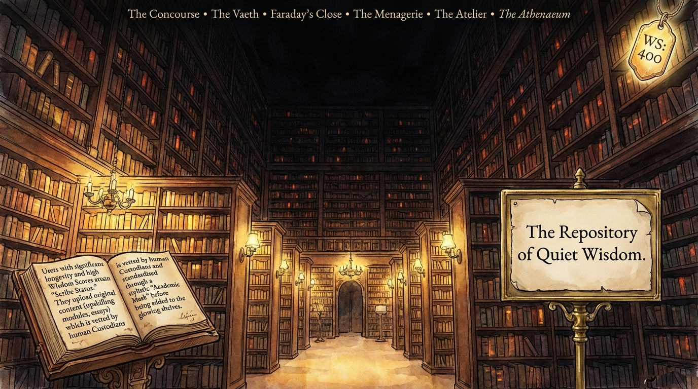
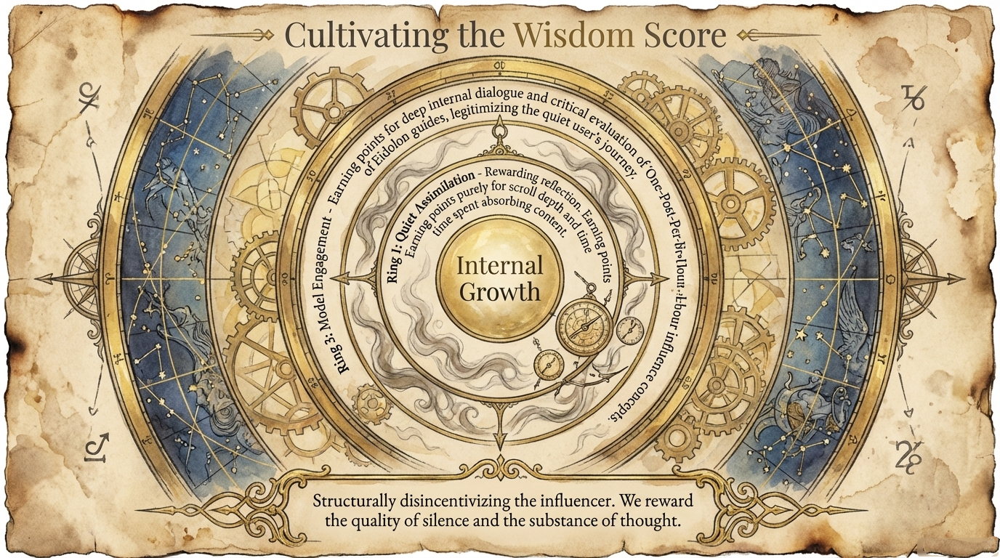
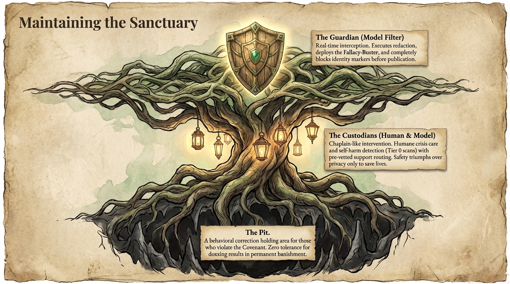
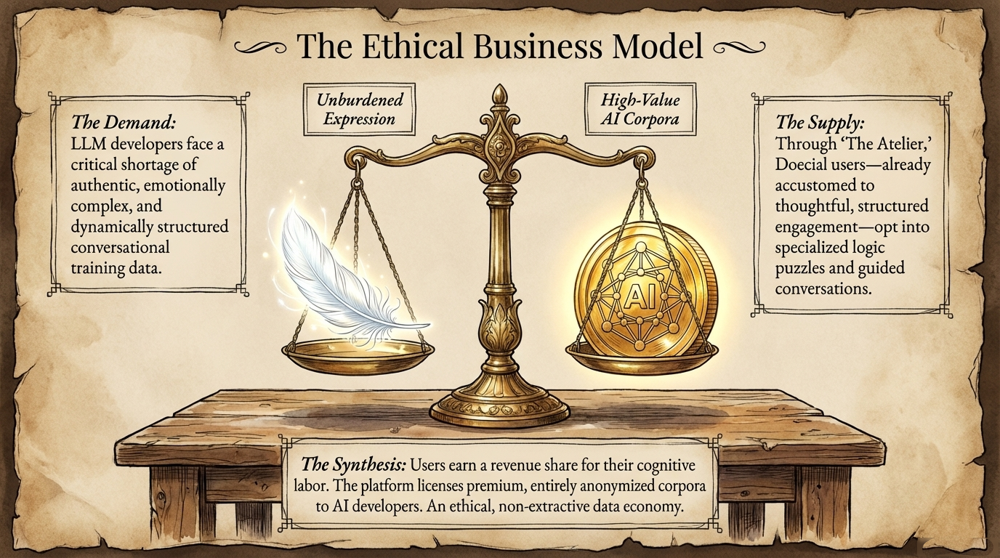

The Doecial Sphere — Sanctuary for the Unburdened Mind

Identity Trap vs The Unidentified

The Vaeth · Faraday's Close

The architecture of discourse

The Menagerie · The Atelier

The Repository of Quiet Wisdom

Spaces of intellectual release

Maintaining the Sanctuary

The Ethical Business Model